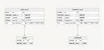

PLEX Product Team Blog
https://product.plex.co.jp/
日本最大級の物流・運送・倉庫・整備士の求人・転職サイト「プレックスジョブ」を運営する株式会社プレックスのプロダクトチームによる公式ブログです。
フィード
ISUCON14で入賞した初出場の新卒チームが取り組んだこと 2
2
PLEX Product Team Blog
この記事は、 PLEX Advent Calendar 2024の11日目の記事です。 はじめに 2024年に株式会社プレックスにエンジニアとして新卒入社した佐藤祐飛(@yuhi_junior)と申します。 ISUCON14にチーム「黒酢唐揚げサン丼」として出場し、初出場で30位入賞することができました。 順位: 30位 / 834チーム 得点: 24464点 得点推移 全チームスコア ISUCONはつよつよエンジニアが多く参加するので準備なしに好成績を収めることがとても難しいコンテストです。しかし、私たちはチームで入念に準備することで初出場の新卒チームであっても入賞することができました。 本…
1日前
神田〜三越前周辺のおすすめランチ10選
PLEX Product Team Blog
はじめに こんにちは、プレックスの石塚です。 この記事は、 PLEX Advent Calendar 2024 の10日目の記事です。 ようやくアドベントカレンダーのできる組織の規模になってきて嬉しい限りです！ ここまで9件の記事が公開されており、ほとんどが技術的なテーマの記事だったため、このあたりで技術の全く関係のないネタをぶち込んで行きたいと思います。 神田〜三越前周辺のおすすめランチ10選 今回の記事ではプレックスのオフィス近辺である神田〜三越前のエリアでランチ営業を行っているお店の中から、一芸に秀でているお店を紹介していきます。 記事を見てくれた方が、どれか1つでも行ってみたいという気…
2日前
Semantic LoggerのログをDatadog用にカスタマイズしてみた
PLEX Product Team Blog
こんにちは、Plex Job開発チームの種井です。 この記事は、 PLEX Advent Calendar 2024の9日目の記事です。 DBクライアントツールはDataGripを使っています！ よく使う機能はダイアグラム機能です。 背景・課題 前提の確認 環境 Semantic Loggerとログのフォーマット やったこと 1. Datadog Logs用のFormatterクラスを作成する 2. Appenderに作成したFormatterクラスを設定する まとめ おわりに 背景・課題 過去の記事「Railsアプリケーションのログを構造化し、Datadogで活用するまで」の中で、Datad…
2日前
Heroku で Cloud SQL を利用する方法
PLEX Product Team Blog
Heroku上でWebアプリを運用し、Google Cloud SQLをデータベースとして利用するための設定手順と注意点を解説した記事です。
3日前

RailsのDelegated Typesで実現する柔軟なモデル設計
PLEX Product Team Blog
この記事は、 PLEX Advent Calendar 2024 の7日目の記事です。 はじめに こんにちは、株式会社プレックスのコーポレートチームの金山です。 この記事では、Railsアプリケーションの設計に役立つ「Delegated Types」について解説したいと思います。 「Delegated Types」がどのような課題を解決するのか、使い方やメリット・デメリット、実際に使ってみた感想をシェアしていきます。 背景と課題 とあるプロジェクトの開発で、通話履歴を管理する機能を実装することになりました。 通話には「企業への通話」と「個人への通話」の２つがあります。 これら２つの異なるモデル…
5日前
プレックス入社！コーポレートチームで頑張ります！
PLEX Product Team Blog
はじめに はじめまして、プレックスの前川と申します。 2024年11月に株式会社プレックス（以下、プレックス）にエンジニアとして入社しました。 入社して２週間と少しですが、自己紹介を兼ねて入社経緯や入社してからの感想などをまとめておきたいと思います。 一人でも多くの方にプレックスに興味を持っていただけると嬉しいです。 目次 自己紹介 プレックスに入社した理由 入社してからの感想 最後に 自己紹介 私の経歴は以下の通りです。 年月 経歴 2016年5月 某個別指導塾企業へ入社。 教室長と教室売却をしていました。 2022年2月 ポテパンキャンプでRuby on Railsを主に学習 2022年8…
6日前
TypeScriptの型を復習しましょう
PLEX Product Team Blog
この記事は、 PLEX Advent Calendar 2024の5日目の記事です。 今回紹介する下記の型は、 よく使うもの、見かけた時にすぐに理解しづらいものを選んでいます。 TypeScriptの型を復習しましょう リテラル型 特定の値そのものを型として使用できる機能 // 例1: type Direction = "north" | "south" | "east" | "west" let myDirection: Direction = "north" // OK myDirection = "up" // ❌ エラー: "up"は許可されていない // 例2: // HTTP メソ…
7日前

【Next.js】Next/Imageの画像プレビューにて発生したメモリリークを追う 3
PLEX Product Team Blog
Next.jsの「Next/Image」を利用した画像プレビュー機能で発生するSafariブラウザのクラッシュ問題について、メモリリークの実態や発生する原因をXcodeとSafari Web Inspectorを駆使して深掘った調査記事です。
7日前

【Webフロントエンド開発】モバイルビューをデバッグするためのSimulator/Emulator活用 2024年版
PLEX Product Team Blog
iOS SimulatorやAndroid Emulatorを活用して、MacBook上でスマートフォン実機に近い環境を再現し、Webフロントエンドアプリケーションの開発・検証を効率化する方法を解説します。Next.jsを例に、設定手順やデバッグツールの活用方法を具体的に紹介。実機が不足している場合でも、精度の高い検証をローカル環境で実現できます。
8日前
Railsアプリケーションのログを構造化してDatadogで活用するまで
PLEX Product Team Blog
こんにちは、Plex Job開発チームの種井です。 私の所属するPlex Job開発チームでは、監視ツールとしてDatadogを使用しています。 Datadogには収集したログを監視や調査に活用する上で便利な機能がいくつかありますが、それぞれの機能を有効化するにはログを予め要求されるフォーマットで書き出す必要があります。 今回は、ログをフォーマットすることで、Datadogの各機能を有効化し監視や調査業務に活用するまでの取り組みについて書きたいと思います。 前提 背景や課題 ログとは？ 構造化ログと非構造化ログ ログの用途 Plex Jobでの課題 今回のゴール 1. アプリケーションのログを…
14日前
【JavaScript】もちろん「0.1 + 0.2 ≠ 0.3」をちゃんと説明できますよね？？
PLEX Product Team Blog
【JavaScript】もちろん「0.1 + 0.2 ≠ 0.3」をちゃんと説明できますよね？？
1ヶ月前
新卒エンジニアが複数社合同で輪読会を開催している話
PLEX Product Team Blog
はじめに こんにちは、2024年4月に株式会社プレックスに新卒入社した佐藤祐飛です。現在は建設業界向けSaaSプロダクト「サクミル」の開発に携わっています。 2024年5月から約2ヶ月間、日本CTO協会主催の「新卒エンジニア向けの合同研修」に参加し、こちらの研修で知り合った10社の24卒新卒エンジニアと月に1度、各メンバーのオフィスにて合同で輪読会を開催しています。本ブログではその内容についてご紹介します。 はじめに 目的 知見の共有 継続的な交流の機会 輪読会の様子 輪読会を継続させる工夫 一名が発表する形式 早めに日程を抑える 懇親会を実施 最後に 目的 輪読会を開催する目的は大きく2つあ…
2ヶ月前
【Rails】ワンタイムトークンが作れる generates_token_for の内部実装を追ってみた
PLEX Product Team Blog
こんにちは、Plex Job 開発チームの池川です。 今回の記事では、Railsアプリでワンタイムトークンを使うにあたって ActiveRecord::Base.generates_token_for と ActiveRecord::Base.find_by_token_for ついて調べた内容をまとめていきます。 検証環境 どのようなメソッドか 1. トークンはどのように生成されているか generates_token_for の内部実装 ActiveSupport::MessageVerifier 2. トークンは生成の都度変わるか 3. トークンの検証時に、実際に比較されている値は何か …
2ヶ月前
【CTO協会研修記録】 未経験エンジニアがISUCONで圧倒優勝するまでの話
PLEX Product Team Blog
はじめに こんにちは、2024年4月に株式会社プレックスに新卒入社した佐藤祐飛です。現在は建設業界向けSaaSプロダクト「サクミル」の開発に携わっています。 2024年7月31日に、日本CTO協会主催の新卒合同研修でISUCON研修が開催され、50万点を超えるスコアで優勝することができました。 CTO協会様主催のISUCON研修優勝しました🏆実はISUCON研修に勝つために2ヶ月間準備していたのですが、その成果が出てよかったです🔥後日、「ISUCON 研修をガチった話」と題してテックブログを投稿する予定なのでそちらもチェックしていただけると嬉しいです‼️#ctoawakate https://…
4ヶ月前
【入社エントリ】フロントエンドからバックエンドへ、さらなる高みを目指すために入社しました！🔥
PLEX Product Team Blog
はじめまして、プレックスの高岡と申します。 2024年4月に株式会社プレックス（以下、プレックス）にエンジニアとして入社しました。 今回、入社して4ヶ月程経ちましたので、入社経緯や入社してからの感じていることをまとめておきたいと思います。 一人でも多くの方にプレックスを知ってもらえると嬉しいです。 自己紹介 プレックスへ入社した理由 入社して感じたところ やっぱり求められる基準が高い 他のエンジニアチーム・メンバーの色や個性が多様でおもしろい ビジネスサイドにも魅力的なメンバーが多い 最後に 次回予告 自己紹介 現在25歳で社会人4年目になります。 新卒では、地元の受託開発の会社に就職しました…
4ヶ月前
【GraphQL Ruby】N＋1問題を防ぐ GraphQL::Dataloaderのまとめ
PLEX Product Team Blog
はじめに こんにちは、SaaS事業部（サクミル）のエンジニアの栃川です。 今回は、N+1問題を防ぐGraphQL Rubyの「GraphQL::Dataloader」について調べたことをまとめていきたいと思います。 github.com 対象とする読者 GraphQL Rubyについて基本的な知識があるという方 GraphQL::Dataloaderについて概要を知りたい方 はじめに 対象とする読者 GraphQL::Dataloaderとは GraphQL::Dataloaderの実装例 前提 fieldの定義 sourcesの実装 どんな仕組みになっているのか？ Fiberについて Gra…
5ヶ月前
Developer eXperience Day 2024 参加レポート
PLEX Product Team Blog
こんにちは、プレックスの石塚です。 今回は、7月16日から17日の2日間にわたって開催されたDeveloper eXperience Day 2024に参加してきたので、その感想をまとめたいと思います！ Developer eXpericence DayはCTO協会が主催するイベントで、その名の通りテーマは開発者体験となっています。 cto-a.org 印象に残ったセッションとその感想 簡単ではありますが、印象に残ったセッションを紹介して、感想をまとめたいと思います。 チーム安野が目指すデジタル民主主義 東京都知事選に出馬し、無所属・初出馬で5位の15万票を獲得された安野さんの発表です。都知事…
5ヶ月前
【インターン記録】技術と事業の両軸を目指して
PLEX Product Team Blog
はじめに はじめまして、豊田と申します。 約半年間、エンジニアインターンとしてサクミルという建設業界向けのSaaSプロダクトの開発に携わりました。 事業が急成長する中で、様々な経験をしたので、振り返りを兼ねてブログを書くことにしました。 はじめに インターンに参加をしたきっかけ 魅力的だった点 1. ビジネスと開発の距離の近さ 2. 事業が急成長する中での開発 半年間で得たもの プロとしての自覚 フィードバック 半年間で変わったこと スタンス スキル 「技術的な視点から事業を伸ばせるエンジニア」になる 最後に インターンに参加をしたきっかけ Xでインターン募集の投稿を見て、興味を持ちました。 …
5ヶ月前
Firebase Authenticationにおける分散トランザクション
PLEX Product Team Blog
はじめに 2024年4月に株式会社プレックスにエンジニアとして新卒入社した佐藤祐飛と申します。現在はサクミルという建設業界向けのSaaSプロダクト開発を行っています。 sakumiru.jp Firebase Authentication(以下Firebaseと略します)を利用した認証において、ユーザー作成時に分散トランザクションによってデータの整合性を担保する実装をRuby on Railsで行ったのでその知見について共有したいと思います。 firebase.google.com はじめに 背景 サクミルにおけるユーザー認証について ユーザー作成方法について 課題 ユーザーデータの不整合が生…
6ヶ月前
【入社エントリ】効率化大好きなエンジニアがプレックスに入社した理由
PLEX Product Team Blog
はじめに 初めまして、エンジニアの山崎と申します。 2024年1月に株式会社プレックス(以下、プレックス)にコーポレートエンジニアとして中途入社いたしました。 入社してから半年弱経過した上で感じたプレックスの良さや業務内容をお伝えできたらと思います。 自己紹介 2020年に新卒で Amazon Web Service に入社し、CSE(クラウドサポートエンジニア)に従事しました。 しかし、人生の深み(ドラマでよく見る、あの頃は大変だったなあというやつ)を出すために、過酷な状況に身を置き、何かにチャレンジしてみたいという謎の好奇心に駆られ2年半で退職しました。 ほぼ無計画で退職後、本気を出せば勝…
6ヶ月前
プレックス、社内勉強会やってます！！
PLEX Product Team Blog
こんにちは、Plex Job 開発チームの池川です。 エンジニアといえば勉強会、ということで今回の記事ではプレックスでこれまで実施した社内勉強会を紹介したいと思います！ 社内勉強会とは 社内勉強会の紹介 1. DDD勉強会（2021/12~2022/2） 2. TypeScript勉強会（2022/3~2022/6） 3. RSpec勉強会（2022/7~2022/10） 4. SRE本の輪読会（2023/3~2023/7） 5. 「単体テストの考え方/使い方」の輪読会（2023/10~2024/2） 6. 「ソフトウェアアーキテクチャの基礎 ―エンジニアリングに基づく体系的アプローチ」の輪読…
7ヶ月前
【入社エントリ】 プレックスに入社しました！
PLEX Product Team Blog
はじめに 初めまして、エンジニアの石川と申します。 2023年9月に株式会社プレックス(以下、プレックス)に中途入社いたしました。 入社して半年以上経ち、入社エントリーを投稿するには少し遅れてしまいましたが、半年以上経った上で見えてきた、会社の良さや日々の業務内容をお伝えできたらと思います。 簡単な自己紹介 簡単に私の経歴をお伝えすると、プログラミングスクール黎明期に仮想通貨で獲得したお金を元にプログラミングスクールに通い、そこから渋谷のベンチャー企業にて毎日プログラムを書きながら、時には1年放浪し紆余曲折ありながら今に至ります。 2018年 短期集中プログラミングスクール TECH::…
8ヶ月前
Plex JobのバックエンドをHerokuからGCPに移行しました
PLEX Product Team Blog
はじめに こんにちは、Plex Job開発チームの種井です。 先日公開された、池川さんのブログ「HerokuからGCPへのインフラ移行 〜ダブルライト検証編〜 - PLEX Product Team Blog」でも紹介がありましたが、Plex Jobでは昨年から今年の1月まで約8ヶ月ほどかけてバックエンドのシステムをHerokuからGCP(Google Cloud Platform)に移行しました。 順番は前後しますが、今回は移行に至った経緯や完了するまでの取り組みについて、ざっくりと全体像について、お話しできればと思っております。 インフラ移行に至った経緯 弊社では 使われるかどうかわからな…
8ヶ月前
大学院を辞退し、初の新卒エンジニアとしてプレックスに入社した理由
PLEX Product Team Blog
はじめに 2024年4月に株式会社プレックスにエンジニアとして新卒入社した佐藤祐飛と申します。プレックスでは初の新卒エンジニアとなります。現在は、SaaS事業部にてサクミルという建設業界向けのプロダクト開発を行っています。 sakumiru.jp タイトルにもある通り、私は学部4年生の夏頃までは大学院へ進学予定でしたが、インターンを通してプレックスでのファーストキャリアを歩みたいと考えるようになりました。 そんな私の体験談を共有しながら、読者の皆様にプレックスについて知ってもらいたいと思い、この記事を書きます。 はじめに 学生時代について✏️ プレックスとの出会い🌸 プレックスでのインターン🌊…
8ヶ月前
立ち上げ期のSaaS事業におけるエンジニアインターンの採用について
PLEX Product Team Blog
SaaS事業 テックリードの石見です。 2023年4月からSaaS事業を立ち上げており、エンジニアインターンを採用しました。 結論、最高の結果になったため、誰かの助けになればと思い詳細に記載することにしました。 ▼SaaS事業の立ち上げの変遷は前回の記事をご覧ください。 product.plex.co.jp 前提 採用要件 必須項目 プログラムによる実装経験がある 週3日以上の出社（研修期間中） 推奨項目 事業で結果を出すことに興味関心・意識が向いている 採用フロー 募集 伝えたこと 企画、設計、実装のすべてのプロセスに関われること 成長プロセスの明記 学生のキャリアに貢献すること 選考 前提…
8ヶ月前
【入社エントリ】あえて入社しました
PLEX Product Team Blog
はじめに はじめまして、プレックスの栃川と申します。 2023年12月に株式会社プレックス（以下、プレックス）にエンジニアとして入社しました。 早くも入社して3ヶ月経ったので、自己紹介を兼ねて入社経緯や入社してからの感想などをまとめておきたいと思います。 一人でも多くの方にプレックスに興味を持っていただけると嬉しいです。 はじめに 自己紹介 プレックスに入社した理由 入社してからの感想 徹底して思考しきる「やばい」文化 当たり前が「すごい」環境 成長が「激アツ」な事業 最後に 自己紹介 改めて栃川と申します。27歳の社会人4年目になります。 私の経歴は下記の通りです。 年月 経歴 2020年4…
9ヶ月前
ユーザー向けプロダクトだけが全てじゃない、テクノロジーで事業にレバレッジを掛けるプレックスのコーポレートエンジニア
PLEX Product Team Blog
eye-catch こんにちは、プレックス コーポレートエンジニアチームの石塚です。 はじめに みなさんは「コーポレートエンジニア」という単語を聞いたことがあるでしょうか？ 情シスや社内SEのようなイメージを持たれる方が多いかと思いますが、わざわざ別の単語を用いて表現しているからには、若干違うニュアンスが込められているはずです。 プレックスにおいても2022年中頃からコーポレートエンジニアというポジションをオープンし、採用を進めてきました。 その際、候補者やエージェントの方にコーポレートエンジニアのニュアンスが間違って伝わっていることが少なからずあり、今回のエントリーを書いてみようと思いました…
9ヶ月前